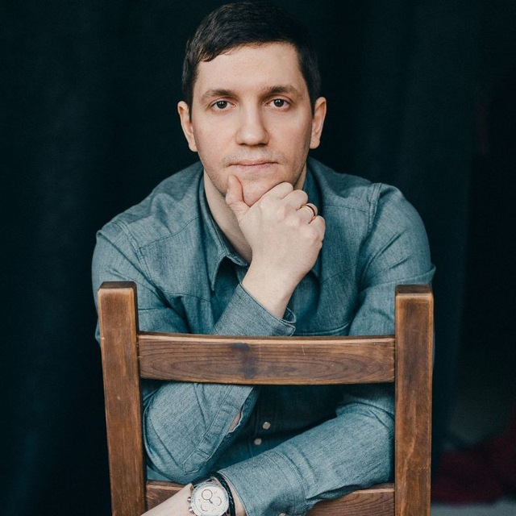

Консалтинг и наставничество
Помогаю предпринимателям выйти из тупика и снова двигаться вперёд
За 20 лет в бизнесе я прошёл через всё. Несколько кризисов, смену команды, депрессию, перестройку с нуля. Теперь помогаю другим проходить это короче.
Кому это нужно
Результаты
Люди приходили подавленными. Уходили оптимистичными и бодрыми. Вот что конкретно происходило:
Два основателя работали по отдельности и не доверяли друг другу. Сформировали общие ценности и цели — начали двигаться вместе.
Предприниматель тащил всё сам, отношения с партнёром тяготили. Наладил отношения, создал команду, перестал делать всё своими руками.
Человек в сложный период потерял веру в себя. Вернул уверенность и увидел возможности там, где раньше видел только ограничения.
Предприниматель на маленьком рынке не понимал как расти. Осознал свою реальную силу и начал формировать культуру в команде.
Обо мне
20 лет я строю агентство Serenity — одно из лучших по комплексному маркетингу в России. Клиенты: VK, Северсталь, Газпром, Сбербанк, Orange, Технониколь.
За это время я сформировал нестандартную культуру: горизонтальная структура, самоорганизация, без иерархии. Несколько раз менял стратегию, проходил через кризисы — в том числе личные. Я не теоретик. Я прошёл это сам.
Прочитал 500+ книг по маркетингу, менеджменту и психологии. Но ценнее книг — то, что я применял всё это в реальной работе и знаю, что работает, а что нет.

Отзывы
«Как совладелец агентства, хочу сказать что Сергей сильно мне помогает. Я часто работаю с консультантами, но это другой уровень»

«Если Сергей будет вашим наставником, то вам очень повезло. Прекрасная возможность для роста и развития как личного, так и компании»
Агентство Serenity
20 лет делаем маркетинг для крупных компаний. Клиенты: VK, Северсталь, Газпром, Сбербанк, Orange, Технониколь.


Канал
Читать канал в Telegram →Работаю с 1–2 людьми одновременно
Не набираю большой поток. Мне важно реально погрузиться в ситуацию каждого. Если есть место — пишите, обсудим, подходит ли вам это.
Одна сессия — 10 000 ₽
Написать в Telegram